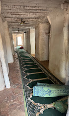
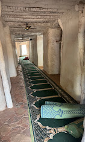
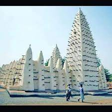
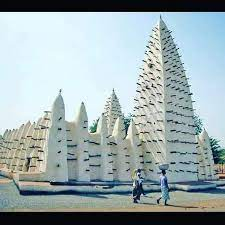

🌿 Présentation
Au cœur du vieux quartier de Dioulassoba, là où les racines de Bobo-Dioulasso plongent profondément dans l’histoire, s’élève une mosquée pas comme les autres. Elle ne brille pas d’or ni de marbre, mais de terre battue, de tradition et de spiritualité. La Mosquée de Dioulassoba, construite au début du XXe siècle, est bien plus qu’un lieu de culte : c’est un témoin vivant du passé, une mémoire façonnée à la main par les hommes et consacrée par le souffle du sacré. Elle a vu défiler les générations, traversé les saisons, et chaque grain de sa terre semble porter l’écho des voix anciennes. Cette mosquée, c’est un livre ouvert, une respiration du temps qui murmure encore les accords de paix entre les chefs de la ville et les premiers guides religieux.
🏛️ Une architecture qui parle au cœur
Son architecture vous surprendra, non par l’exubérance, mais par la puissance silencieuse de l’authenticité. Conçue dans le style soudano-sahélien, elle s’élève en banco — un mélange de terre crue, d’eau et de paille. Les torons (poutres en bois qui jaillissent des murs) dessinent une silhouette singulière contre le ciel africain. Non seulement décoratifs, ces torons servent aussi à l’entretien : un geste de soin transmis de génération en génération. Les murs chauds, respirant la terre et le soleil, abritent un intérieur frais et paisible. La lumière y entre avec discrétion, comme pour ne pas troubler les prières. Chaque coin, chaque fissure semble porter une prière, un espoir, un souvenir.
✨ Importance culturelle et spirituelle
La Mosquée de Dioulassoba est une âme vivante de Bobo-Dioulasso. Elle ne sépare pas, elle unit : ethnies, âges, croyants et visiteurs. Elle est à la fois un sanctuaire, un repère pour les habitants, et un symbole du vivre ensemble qui caractérise cette ville harmonieuse et accueillante.
C’est ici que les anciens transmettent les récits, que les enfants courent après la prière, que les artisans du quartier puisent leur inspiration. La mosquée est au centre de la mémoire collective, et les habitants en sont fiers. La visiter, c’est aussi rencontrer ceux qui la font vivre, qui la restaurent, qui y prient, et qui la respectent comme on respecte un ancien.
Voyageur, visiteur, curieux ou passionné d’histoire : la Mosquée de Dioulassoba vous tend les bras. Elle vous offre une expérience humaine et spirituelle, loin du tourisme de surface, proche de l’essentiel.
Venez vous perdre dans les ruelles de Dioulassoba, laissez-vous guider par les voix des enfants et l’appel du muezzin. Touchez la terre des murs, respirez le calme de l’intérieur, et laissez cette mosquée vous parler. Vous repartirez différent, enrichi. Non seulement par ce que vous aurez vu, mais surtout par ce que vous aurez ressenti.
🌍 Une invitation à venir, avec le cœur
Galerie
.jpeg) 

.jpeg) 

.jpg)
.jpeg)
Informations pratiques